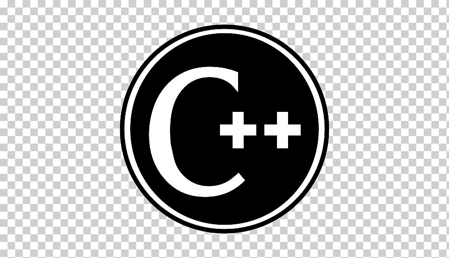

Programare
Programarea este dispunerea cronologică a unor mișcări, operații, acțiuni sau activități astfel încât în finalul perioadei să se realizeze o stare posibilă a unui sistem. Programarea este cunoscută ca activitate umană dar există semnalmente că pot exista forme de programare naturale, fără intervenția omului cum sunt dispunerile proceselor genetice sau comportamentele dirijate instinctual la animale.

Limbajul C++
C++ este un limbaj de programare general, compilat. Este un limbaj multi-paradigmă, cu verificarea statică a tipului variabilelor ce suportă programare procedurală, abstractizare a datelor, programare orientată pe obiecte. În anii 1990, C++ a devenit unul dintre cele mai populare limbaje de programare comerciale, rămânând astfel până azi.